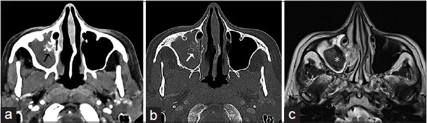

715 — Viêm & nấm xoang: mycetoma, dị ứng & Mucor xâm lấn / Fungal sinusitis
Tags: pattern:viem-nam-xoang vung:dau-mat-co
Mức chắc chắn (certainty): tổng hợp y văn (literature synthesis) — nhóm tự biên từ y văn mở, chưa gắn ca nguyên văn đơn lẻ.
1. Tổng quan — miễn dịch quyết định xâm lấn + kim loại quyết định tín hiệu
- Nấm bóng (mycetoma, Aspergillus, miễn dịch thường): búi sợi + canxi/kim loại — TẠI SAO > 70 HU + T2 void: oxalate canxi + sắt/mangan + không nước tự do.
- Mucor xâm lấn cấp (đái tháo đường, < 4 tuần, tử vong 50–80%): xâm mạch — TẠI SAO black turbinate (cuốn không ngấm) + lan mỡ quanh xoang + xoang hang: hoại tử thiếu máu do tắc mạch.
- Dị ứng (atopy): nhầy đặc kim loại — T2 void + giãn xoang + không ngấm trong (viền ngấm!).
2. Gamut mờ xoang 1 bên (Gamut)
- > 70 HU + vôi + viêm mạn 1 xoang hàm: mycetoma — nội soi lấy bóng nấm.
- Đái tháo đường + black turbinate + lan hốc mắt/sọ: Mucor cấp — mổ cắt lọc + amphotericin tối khẩn!
- Dị ứng + nhiều xoang + T2 void + giãn: dị ứng — corticoid + phẫu thuật dẫn lưu.
- Phá xương + khối + chảy máu: u — sinh thiết (đừng nạo nấm mù!).
3. Bảng so sánh phân biệt (ma trận đối chiếu)
| Thực thể (entity) | Hình ảnh điển hình | Chốt vào (rule-in) | Chốt loại (rule-out) | Gợi ý xác nhận |
|---|---|---|---|---|
| Mycetoma | > 70 HU + vôi + 1 xoang + T2 void | Vôi + miễn dịch thường + mạn | Black turbinate → Mucor | Nội soi lấy + cấy |
| Mucor xâm lấn | Black turbinate + lan mỡ/hốc mắt + ĐTĐ | Không ngấm + cấp + suy giảm MD | Vôi đơn độc → mycetoma | Mổ + amphotericin tối khẩn |
| Dị ứng | Nhiều xoang + T2 void + giãn + viền ngấm | Atopy + 2 bên + nhầy đặc | Phá xương + khối → u | Corticoid + phẫu thuật |
| U xoang | Khối + phá xương + chảy máu 1 bên | Phá + khối + lớn tuổi | Vôi + void → nấm | Sinh thiết + MRI |

(a–b) CT vôi + viêm xương; (c) T2 void + niêm mạc phù. Nguồn: Gavito-Higuera et al., J Clin Imaging Sci 2016 Fig. 3, CC BY-NC-SA 3.0.4. Protocol mũi xoang nấm
- CT không tiêm (HU!) + MRI (T2 void + ngấm) + đường máu + nội soi sinh thiết khi 1 xoang + vôi/void; ĐTĐ + black turbinate = tối khẩn.
flowchart TD
A[Mờ xoang + vôi/void] --> B{Black turbinate + ĐTĐ?}
B -->|Có| C[Mucor: mổ + amphotericin!]
B -->|Không + >70HU| D[Mycetoma: nội soi]
B -->|Nhiều xoang + dị ứng| E[Dị ứng: corticoid]
5. Cạm bẫy
- Dịch cô đặc mạn giả máu/u — HU + T2 void + bối cảnh mới phân biệt.
- Mucor chờ sinh thiết = tử vong — black turbinate + ĐTĐ là mổ + thuốc ngay.
- Dị ứng lan sọ tưởng K — viền ngấm + không phá thật + atopy là mổ dẫn lưu.
6. Tự lượng giá — Blind Quiz
Ca 1 — Viêm hàm phải mạn + đau mặt. Đọc CT + MRI.
- Hỏi: vôi bao nhiêu HU thì nghĩ nấm? Mổ hay thuốc?
Bấm để hiện đáp án
- Dấu hiệu (findings): đặc hàm phải + vôi trong > 70 HU + viêm xương + T2 void (*).
- Chẩn đoán (diagnosis): nấm bóng mycetoma — nội soi lấy bóng + dẫn lưu (không phải Mucor vì không black turbinate/lan).
- Nguồn: Gavito-Higuera et al., Fig. 3, CC BY-NC-SA 3.0.
Ca 2 — ĐTĐ + nghẹt mũi + cuốn giữa không ngấm + mờ lan hốc mắt: mycetoma hay Mucor? (Bảng mục 3.)
Bấm để hiện đáp án
- Mucor xâm lấn cấp: mổ cắt lọc + amphotericin tối khẩn (tử vong 50–80% nếu chờ!).
Bài liên quan chéo
- 700 – Tổng quan Đầu Cổ
- 710 – Mũi xoang OMC (biến thể)
- 235 – Thái dương & xoang (vôi nấm)
Không dùng để chẩn đoán độc lập khi chưa có người hướng dẫn.